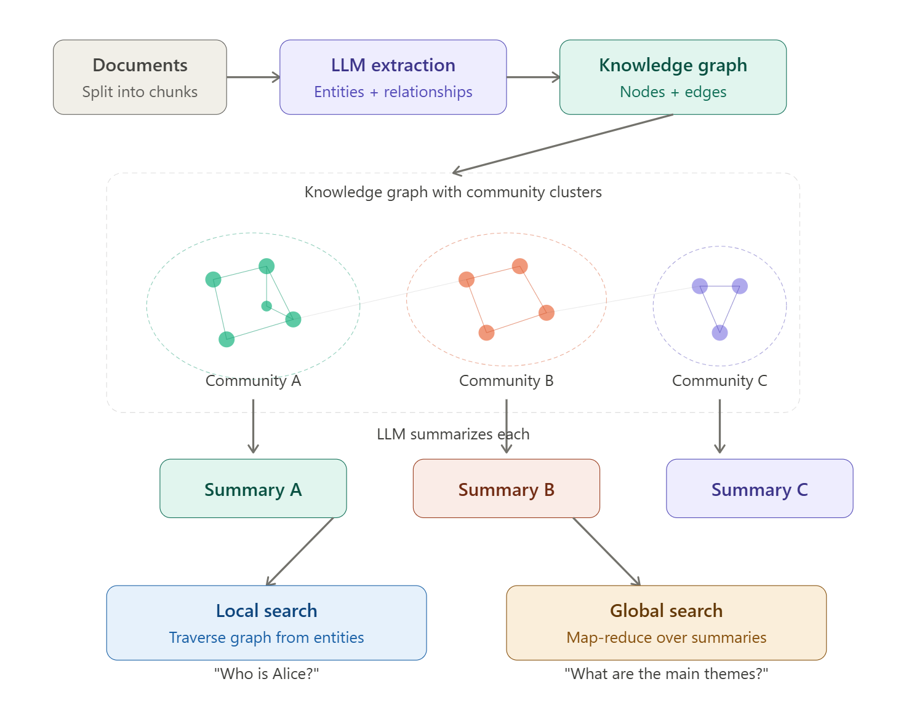
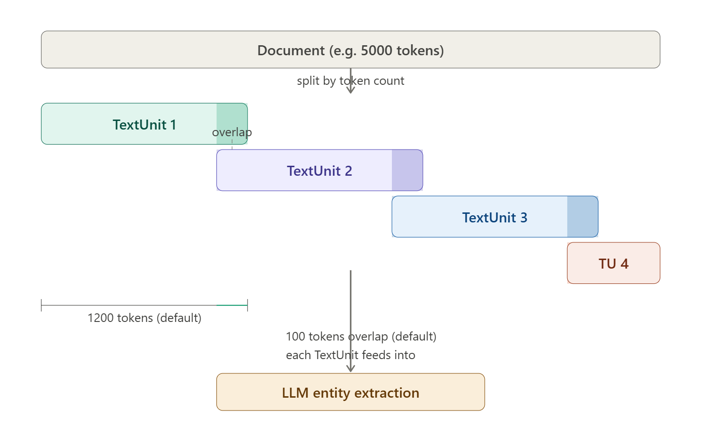
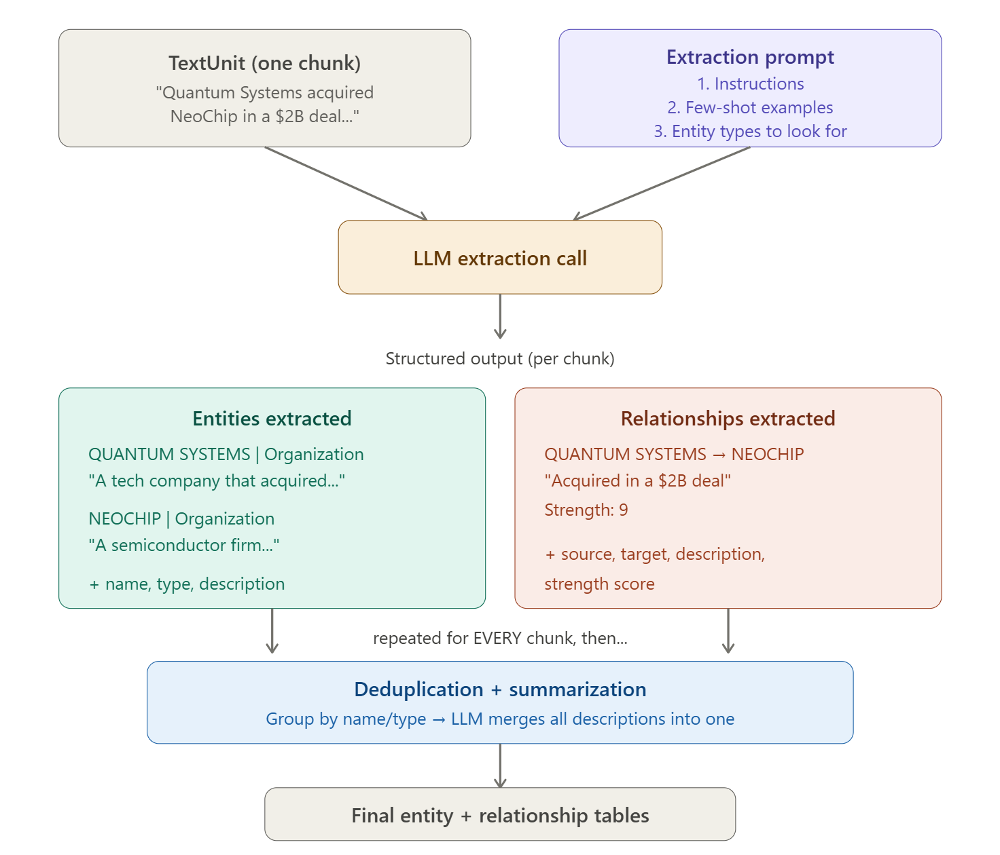

GraphRAG: a technical deep dive into graph-augmented retrieval
Vector RAG is great at finding chunks. It is bad at answering questions whose answer doesn't live in any single chunk. GraphRAG fixes that by building a graph and a hierarchy of summaries at indexing time, so synthesis becomes a retrieval problem instead of a hope.

1. The problem with vector RAG
The default RAG recipe is straightforward. Split documents into chunks, embed them, store the vectors, and at query time pull the top-k chunks closest to the embedded question. Hand that context to an LLM. It works well for a narrow class of questions.
That class is localized factual lookups. "What's the refund policy?" "Which clause covers force majeure?" "What did Alice say in the Q3 review?" These answers sit inside one or two chunks, so vector similarity hands the LLM exactly what it needs.
The problems start the moment a question requires aggregation across the corpus. Try this one against 200 project post-mortems:
"What are the recurring risks across all 200 project reports?"
The answer doesn't live anywhere. It's distributed. Top-k similarity returns the chunks that look most like the question, not a representative sample of risk language across the corpus. You get five paragraphs that say the word "risk" near other words from the query. The LLM does its best, then hallucinates the rest. There is no pre-computed clustering, no aggregation step, no notion of "what this corpus is mostly about" — just nearest neighbors, every time.

This isn't a tuning problem. You can't fix it with a better embedding model or a larger k. The retrieval primitive — point-wise similarity over chunks — has no mechanism for synthesis. Synthesis is what the LLM is supposed to do at the end of the pipeline, but you can't synthesize what was never retrieved.
Do the structural work at indexing time. Extract entities and relationships, build a graph, partition it into communities, and have an LLM summarize each community before any query arrives. Now there are two retrieval primitives instead of one: walk the graph from a starting entity, or fan out across pre-written community summaries. Synthesis becomes retrieval over summaries — a thing vector RAG can't do because it has no summaries to retrieve.
2. The GraphRAG pipeline at a glance
Four steps. Each one is load-bearing.
- Entity & relationship extraction. One LLM call per text chunk produces structured tuples — entities with descriptions and typed relationships with strength scores.
- Graph construction. Entities become nodes, relationships become edges. Edge weights are the sum of LLM-assigned strengths, not co-occurrence counts.
- Hierarchical community detection. The Leiden algorithm partitions the graph recursively into multi-level clusters. Each level trades granularity for cost.
- Community summarization. An LLM writes a structured report for every community at every level. These reports are the artifact global search consumes — pre-computed reasoning, persisted to disk.

The split that matters is build-time vs query-time. Vector RAG does almost nothing at indexing — it embeds and stores. Querying is where all the work happens, and the LLM has to do every bit of reasoning from scratch on context that was retrieved by similarity alone. GraphRAG pushes the work the other way. Indexing is expensive: hundreds to thousands of LLM calls before a user has asked anything. In exchange, query time inherits a graph and a hierarchy of human-readable summaries the LLM can lean on.
| Vector RAG | GraphRAG | |
|---|---|---|
| Retrieval | Top-k chunk similarity | Graph traversal + community summaries |
| Good at | Specific, localized facts | Specific facts and cross-corpus synthesis |
| Fails at | "Themes across", "recurring", "compare" | Nothing fundamental — cost/latency tradeoffs |
| Indexing cost | Low (embed + store) | High (1 LLM call per chunk + per community) |
| Query latency | ~1s | Local 1–2s, global 5–15s, drift 10–30s |
| Freshness | Append a chunk and you're done | Re-index to keep communities coherent |
3. Chunking: the most underrated knob
Chunk size is the upstream knob that controls every downstream quality metric in GraphRAG — extraction precision, graph connectivity, community coherence, summary quality, and ultimately the answer.
The default scheme is unglamorous: fixed-size token windows with overlap. Microsoft's reference implementation ships with 1200 tokens per chunk and 100 tokens of overlap, splitting on token count (not sentences or paragraphs). Chunks carry their metadata forward so extraction prompts can see what document they came from.

Size is a cost decision and a quality decision, and the two pull opposite ways.
| Chunk size | Extraction quality | Cost | When to pick it |
|---|---|---|---|
| ~300 tokens | Very high precision; misses cross-paragraph relations | Very high | Fine-grained provenance, regulated content |
| ~1200 tokens (default) | Catches cross-paragraph context; good balance | Moderate | General purpose — start here |
| 2000+ tokens | Loses fine-grained entities | Low | Cost-sensitive analysis over coarse documents |
The cost lever is large. A 26,000-word document at 300-token chunks generates around 260 extraction calls. At 1200 tokens, the same document is ~26 calls. Same model, same prompt — a 10× difference, before you've considered summarization or embeddings.
Smaller chunks aren't strictly better even at infinite budget. Below ~300 tokens the extractor frequently sees only one side of a relationship and produces dangling entities. Shrinking past the point where context spans the chunk boundary actively hurts the graph.
4. Entity and relationship extraction
For each chunk, GraphRAG makes one LLM call with a prompt that asks for two lists: entities and the relationships between them. The output isn't free-form prose — it's structured tuples the indexer can parse and merge.
# entity tuple
("entity" | ENTITY_NAME | ENTITY_TYPE | "description")
# relationship tuple
("relationship" | SOURCE | TARGET | "why related" | STRENGTH)
# concrete example, from a chunk about an acquisition
("entity" | QUANTUM_SYSTEMS | ORGANIZATION | "A tech company that acquired NeoChip for $28B.")
("entity" | NEOCHIP | ORGANIZATION | "A semiconductor firm acquired by Quantum Systems.")
("relationship" | QUANTUM_SYSTEMS | NEOCHIP | "Acquired in a $28B deal." | 9)
The description field, on both entities and relationships, is the part that distinguishes GraphRAG from generic information-extraction pipelines. The graph isn't built from labels alone. Each node carries a paragraph of grounded prose pulled directly from the chunk it appeared in, and each edge carries an explanation of why the two endpoints are related. Local search later concatenates those descriptions into the LLM's context window — they are the "retrieved text" of GraphRAG.
The strength score is the LLM's own assessment of how strong the relationship is. When the same pair of entities appears in multiple chunks, the final edge weight is the sum of those strengths — not a count of occurrences. Two chunks mentioning "Alice founded Acme" with strength 9 each produce a stronger edge than five chunks mentioning them in passing with strength 2. This is what makes Leiden behave well on the graph later: edge weight tracks semantic importance, not lexical frequency.

Anatomy of the extraction prompt
The prompt has four parts. Each one is a place where the default will fight you if you don't tune it:
- Instructions — how to extract, what shape the output must take.
- Few-shot examples — about 15 entities and 12 relationships, restricted to Geo, Person, Event, and Organization in the default ship.
- The chunk itself.
- Gleanings — a multi-turn loop that asks the model whether it missed anything on the first pass. Cheap pass, often worth it.
The shipped few-shot examples are about businesspeople and geography. Point this pipeline at a technical codebase, a clinical corpus, or a legal contract and it will dutifully extract people and places while ignoring the things you actually care about — functions, dosages, parties. You have to tell it what an entity is in your domain.
For an agentic-AI codebase, sensible types are Function, Module, API, DataSource, Agent, Tool, Prompt, Risk. For clinical notes you want Symptom, Medication, Procedure, Condition. The CLI ships a generator that takes a sample of your corpus and produces a domain-specific persona and example set:
graphrag prompt-tune --root ./data --domain "clinical-trial-reports"Run it. The generated prompts aren't perfect, but they're dramatically better than the defaults and they take five minutes to produce.
Deduplication and entity summarization
A name like "Jon" might be extracted 82 times across 60 chunks, each time with a slightly different description. Deduplication groups by exact string match on the (name, type) pair and asks an LLM to consolidate the descriptions into one canonical paragraph.
The hard limit, and you should know it before deploying anything: this is not entity resolution. "Jon" and "Jon Márquez" stay as two distinct nodes. "Acme" and "Acme Corp" stay separate. There is no surface-form linking, no coreference, no embedding-based clustering of entity names. If your corpus has variant spellings of important entities, you will see them as siblings in the graph. Mitigations are post-processing your own coreference pass, normalizing surface forms before extraction, or constraining the few-shot examples to push the LLM toward canonical names. None of them are free.
Cheap mode
There is a "fast" indexing path that swaps the LLM extractor for NLTK/spaCy noun-phrase extraction plus co-occurrence edges. Chunks shrink to 50–100 tokens. Cost drops by an order of magnitude or more, descriptions effectively vanish, and community summaries get noticeably thinner. Useful for evaluation, prototyping, or domains where you only need a graph skeleton. Don't ship it as your main retrieval path.
5. The knowledge graph and hierarchical Leiden
Nodes are entities, edges are relationships, weights are summed strengths. The interesting question is what to do with the graph once you have it.
GraphRAG runs hierarchical Leiden on this graph. Leiden is a community-detection algorithm in the modularity family (Traag, Waltman & van Eck, 2019); the "hierarchical" part means it applies recursively, splitting each community further until a size threshold is hit. The output is a tree of partitions at successive levels of resolution.
The level number matters because it directly controls the cost and granularity of global search later. Level 0 is the coarsest partition — maybe ten communities covering the entire corpus. Level 2+ can produce thousands.
| Level | Granularity | ~ # communities | Use |
|---|---|---|---|
| 0 | Coarsest | 5–15 | Broad themes, cheap global search |
| 1 | Medium | 50–100 | Balanced detail vs. cost |
| 2+ | Finest | 100s–1000s | Detailed analysis |
Within a level, the partition has a clean invariant: every entity belongs to exactly one community, and the communities are non-overlapping. Across levels, the hierarchy is strict — a Level 1 community is a subset of one Level 0 community. This is what makes the next step work.
What gets materialized
The output of indexing is a set of parquet tables, not a service. The chain is fully traceable end to end:
documents
↓
text_units # chunks + character offsets
↓
entities # name, type, description, embedding
relationships # source, target, description, weight
↓
communities # parent_id, level, entity_ids[]
community_reports # title, summary, rating, findings[]
vector_store/ # embeddings for entities, text_units, reportsEvery claim in a community report points at entity IDs and relationship IDs. Those point at text unit offsets. Those point back at the source document. If a downstream answer cites a finding, you can walk all the way back to the sentence it came from. This is the property compliance and audit teams care about, and it's the property vector RAG cannot give you.
6. Community reports — the secret sauce
Community reports are the construct that makes GraphRAG work as a synthesis engine. If you only remember one section of this article, remember this one.
For every community at every level, an LLM is given the entities, relationships, and (for non-leaf communities) the sub-community reports it contains, and asked to write a structured report. The schema is rigid:
{
"title": // short, specific, names the entities
"summary": // executive summary of structure + themes
"rating": // 0–10 impact severity
"rating_explanation": // why this rating
"findings": [
{
"summary": // one-line finding headline
"explanation": // grounded explanation with [Data: ...] refs
"references": // ["entity_id:123", "relationship_id:456", ...]
},
// 5–10 findings total
]
}
Grounded references. The prompt instructs the LLM to cite entity IDs and relationship IDs for every claim, in the form [Data: Entities (12, 18); Relationships (7)]. The LLM is also told not to include information that isn't supported by the source data. This isn't watertight — LLMs hallucinate — but the structural requirement to cite IDs you can later verify cuts the failure rate substantially and gives you a place to audit when something looks wrong.
Impact rating. Every report gets a 0–10 severity score. For a corpus of project risks this captures how serious the cluster is; for fiction, dramatic intensity; for customer feedback, complaint severity. The rating doesn't drive ranking directly — global search's reduce step ranks by the per-point ratings produced at map time (see §8) — but the community severity informs the map prompt and survives transitively into the reduce ordering. Without it, the LLM has no notion of which clusters in your corpus actually matter.
Hierarchical substitution. A Level 0 community might contain 300 entities and 800 relationships. Their raw descriptions don't fit in any context window. So when GraphRAG writes the Level 0 report, it doesn't see raw entities — it sees the reports from the Level 1 children. The Level 0 report is then a summary of summaries, grounded transitively through the children to the original text. This is what lets community reports scale to large corpora: the tree absorbs the context-window problem.
Community reports turn synthesis from an inference-time problem into a retrieval problem. The LLM has already done the cross-document reading work at indexing time. At query time you don't ask it to synthesize — you ask it to filter and re-rank pre-written findings.
7. Local search
Local search is the engine for questions whose answer is concentrated around a specific entity or small subgraph. "What's Laura's connection to the merger?" "Which functions call the rate limiter?" "What did Acme acquire last year?"
It runs in five steps:
Step 2 is the only place vector similarity does anything in this flow, and it's against entity embeddings, not chunk embeddings. The default config matches the top 10 entities, oversampled 2× to 20 candidates before ranking. From there the graph does the work: neighbors, edges, covariates (time-bound claims attached to entities, if you configured them), and finally the source chunks the matched entities appear in.
The context budget
Step 4 is where most teams over- or under-spend. Local search uses a fixed token budget — 12,000 by default — and the prompt sections compete for it. The default allocation is:
- 50% text units — the raw source chunks where matched entities appear.
- 40% entity + relationship descriptions — the structured, LLM-written context.
- 10% community report — the surrounding cluster's report, for orientation.
Relationship ranking inside the 40% slice has its own rule. In-network edges, where both endpoints matched the query, go first. Out-network edges, where only one endpoint matched, are ranked below in-network but kept — they're the source of "surprising context" answers, where the model knows something connected to your query that you didn't ask about. Cut them entirely and answer quality drops in a way that's hard to see in eval but obvious in user-facing demos.
For "What retribution is Laura seeking?" — vector RAG looks for chunks where the tokens "Laura" and "retribution" appear close together. Local search finds the entity Laura, walks her relationships (rivals, allies, grievances, locations), pulls her community's report for context, and only then retrieves the chunks where she's named. The retrieval is structured by who she is, not by which words happen to be near her name.
8. Global search
Global search is the engine for the questions vector RAG can't touch. "What are the recurring themes?" "Compare risk profiles across these projects." "Summarize the antagonists." These questions don't have an entry-point entity, and the answer is distributed across the corpus.
The mechanism is map-reduce over community reports at a chosen level.
The map step fans out one LLM call per community report, in parallel. Each call returns a JSON list of points, with each point carrying its own per-query relevance score on a 0–100 scale (distinct from the community-report severity rating, which lives on a 0–10 scale and is set at indexing time):
# for each community report at level L (parallel)
prompt = f"""
You are given a community report and a user query.
Extract the points from this report that are relevant
to the query. For each point, give an importance rating 0–100.
Return strict JSON: [{{ "point": str, "rating": int }}]
Community report: {report}
Query: {query}
"""The reduce step collects every point across every batch, sorts by rating, and asks the LLM one more time:
# reduce
prompt = f"""
Synthesize the highest-rated points below into a single
coherent answer to the user's query. Preserve citations.
Points: {ranked_points}
Query: {query}
"""The level you pick controls the bill. Level 0 might be ten community reports — ten map calls, one reduce call. Level 2 might be a thousand. The granularity of the answer scales with the level, but so does the cost and the latency.
Dynamic community selection
Brute-force global search at Level 2 is expensive and, more importantly, much of the cost is wasted. The query "recurring risks in financial reports" doesn't need to map over a community about office furniture. Dynamic selection fixes this.
The algorithm walks the community tree from the root. At each node, an LLM is given the community's report and the user query and asked, in effect: "is this community's content relevant to this query?" Irrelevant subtrees are pruned. Relevant ones are descended into. The map step is only ever run on the surviving leaves.
The cost savings are large — typically 5–10× — but the more interesting result is that quality often improves. With brute-force selection, the reduce step is fed points extracted from hundreds of irrelevant reports, and many of them are noise that happened to keyword-match the query. Pruning at the tree level keeps that noise out of the reduce context entirely. The LLM ends up with a smaller, cleaner set of points to synthesize.
In production, dynamic selection is not a tuning knob. It's the only sensible default for global search past a few dozen communities.
9. Query modes and agentic routing
GraphRAG ships four query engines. Each one has a workload it's good at, and forcing the user to pick is the wrong design.
| Mode | Best for | Mechanism | Latency | Cost |
|---|---|---|---|---|
basic |
Simple lookups, baseline | Top-k vector search over chunks | <1s | Low |
local |
Entity-anchored questions | Embed → entities → graph walk → context | 1–2s | Medium |
global |
Themes, comparisons, overviews | Map-reduce over community reports | 5–15s | High |
drift |
Complex — breadth and depth | Global → local drilling via LLM follow-ups | 10–30s | Highest |
DRIFT (Dynamic Reasoning and Inference with Flexible Traversal) starts with global, gets a broad answer, then has an LLM generate follow-up questions that local search drills into. The output mixes the breadth of global with the precision of local. It's the mode users like best when latency budgets allow.
Routing
Don't expose the four modes to users. Route automatically. A small classifier or even a keyword heuristic catches most of the traffic, and the router's cost is negligible next to running the wrong mode.
def route(query: str) -> str:
q = query.lower()
# broad thematic signals → global
if any(w in q for w in ["themes", "summary", "overview", "main", "across", "all"]):
return "global"
# named-entity / factual signals → local
if any(w in q for w in ["who", "what is", "module", "function", "depends on"]):
return "local"
# comparative / causal → drift
if "compare" in q or "why" in q:
return "drift"
return "basic"The above will misroute some queries. That's fine. The graceful failure mode is "ran the cheaper mode when global would have been better" — which produces a less complete answer, not a wrong one. A small LLM classifier reads the query and produces a routing decision in ~50 tokens; the savings on routing a single question away from global pays for thousands of classifier calls.
10. Production concerns
Cost and latency
Indexing is the line item that surprises people. On a 10,000-chunk corpus with GPT-4o-class extraction, the dominant cost is extraction itself — one LLM call per chunk, with non-trivial output tokens. Add another LLM call per community at every level, plus embedding calls for entities and text units. Indexing a fresh corpus typically runs into the low thousands of dollars before any user has asked a question.
Query-time cost is concentrated in global and drift. Local and basic are cheap. Mitigations that actually move the bill:
- Dynamic community selection for every global query.
- Aggressive result caching — the same broad query is asked a lot.
- Routing away from global when the query doesn't need it.
Data freshness
This is the place GraphRAG hurts the most relative to vector RAG. With a vector store you can append a chunk and the next query sees it. With GraphRAG, appending a chunk gives you a few orphan entities that aren't reflected in any community report. Global search quality degrades silently — the corpus has moved, the summaries haven't.
Three strategies, in order of cost:
- Full re-index on a schedule (nightly or weekly). Highest consistency. This is the default production pattern.
- Incremental append. Add new docs to extraction, skip the community/summary refresh. Cheap; degrades global search over time. Useful as a stopgap between re-indexes.
- Hybrid re-index of touched communities only. Identify which communities the new entities landed in, re-summarize those. Saves a lot of money, requires custom tooling, and isn't yet a first-class part of the framework.
Run a nightly full re-index. For "what happened today," fall back to plain vector RAG over the day's new documents. Two retrieval paths, one consistent product surface.
Prompt tuning is the highest-leverage knob
If you ship GraphRAG with the default prompts on a non-generic corpus, your output will be mediocre. The defaults are tuned for prose about people, companies, and places. Anything else — code, law, medicine, internal jargon — needs domain-specific prompts.
The three levers, in order of impact:
- Entity types. Replace the default
Geo / Person / Event / Organizationwith the types that actually exist in your domain. - Few-shot examples. Replace the generic 15-entity / 12-relationship example set with examples from your corpus.
- Chunk size. Default 1200; adjust based on document structure.
The auto-tune workflow is fast and worth running before you do anything else:
# 1. sample the corpus
graphrag sample --root ./data --limit 10
# 2. generate domain-specific persona + few-shot examples
graphrag prompt-tune --root ./data --domain "my-domain"
# 3. inspect what it produced
ls prompts/
# entity_extraction.txt
# community_report.txt
# summarize_descriptions.txt
# 4. index
graphrag index --root ./dataWhen to use GraphRAG vs vector RAG
For most production systems: use both. Vector RAG is cheap, fast, and updates incrementally; GraphRAG is expensive and powerful. The decision criteria:
| Reach for GraphRAG when… | Stick to vector RAG when… |
|---|---|
| Cross-document reasoning is the workload | Specific factual lookups dominate |
| Thematic synthesis is a stated requirement | Data changes by the minute |
| Domain has clean entities and relationships | Entities are highly ambiguous, no clean dedup |
| Indexing cost is acceptable for the corpus size | Cost/latency budget is tight |
| Traceable, ID-grounded citations are required | No need for cross-document synthesis |
11. Mental model and closing
"Find me the most similar chunks." Cheap to build, low latency, easy to update. Fails on questions whose answer is distributed across the corpus.
"Build a map of all the knowledge first, then navigate it." Expensive to build, harder to update, but synthesis is a retrieval problem instead of a hope. Pre-computed reasoning at indexing time is what makes global queries answerable at all.
The tradeoff is paid upfront: extraction is the cost, community reports are the asset, and everything downstream is mechanics layered on top.
If you're starting from zero: read the Microsoft GraphRAG documentation, run prompt-tune on a sample of your data before you do anything else, and don't ship the default prompts to a domain-specific corpus. Build the smallest possible graph end-to-end, look at the community reports the system produces, and iterate from there. The first reports you read will tell you more about your corpus than any retrieval eval.